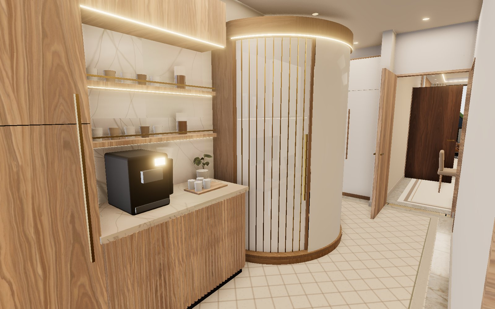
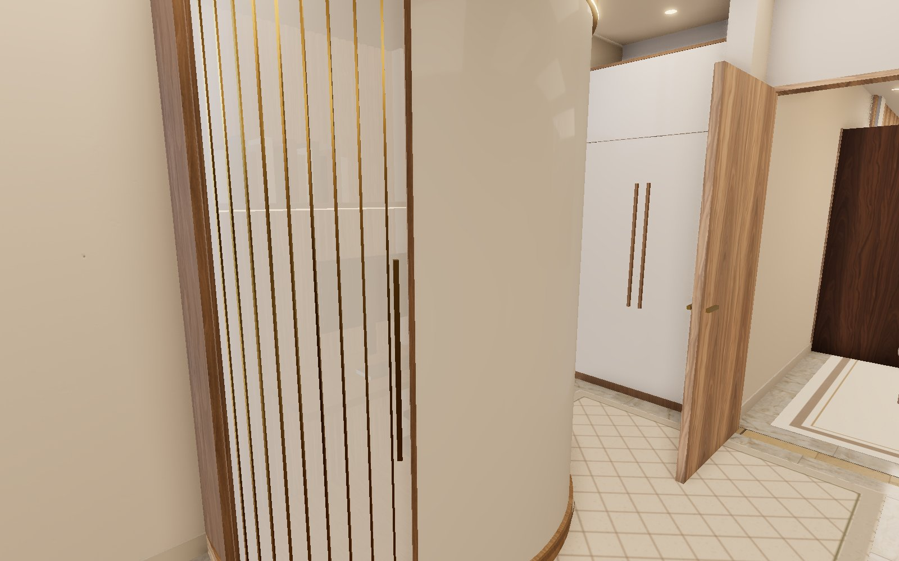
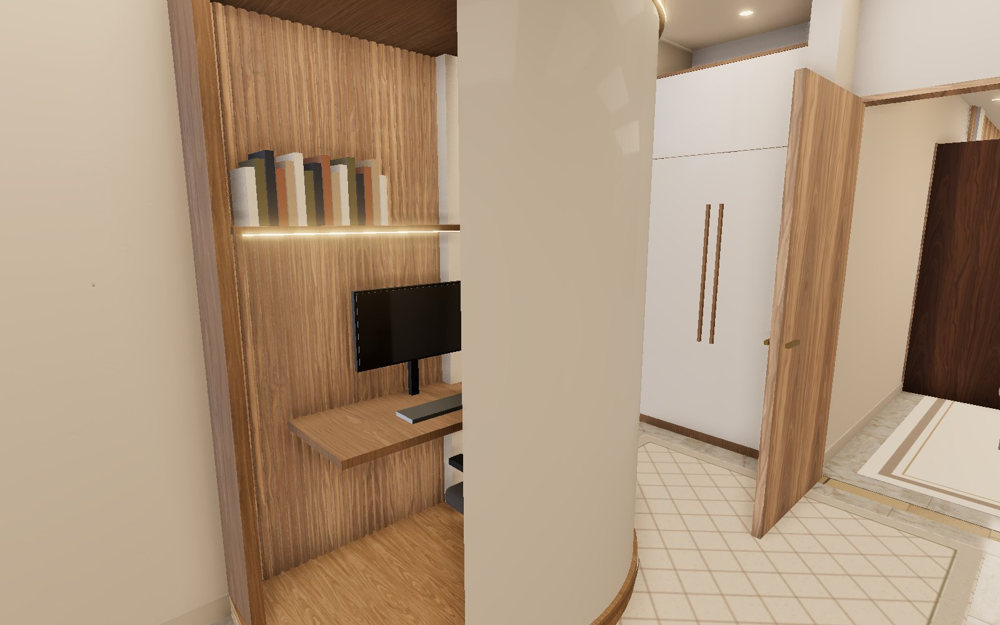
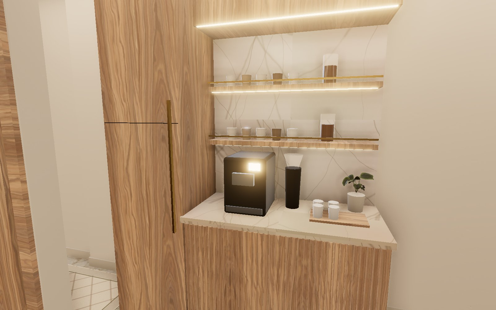
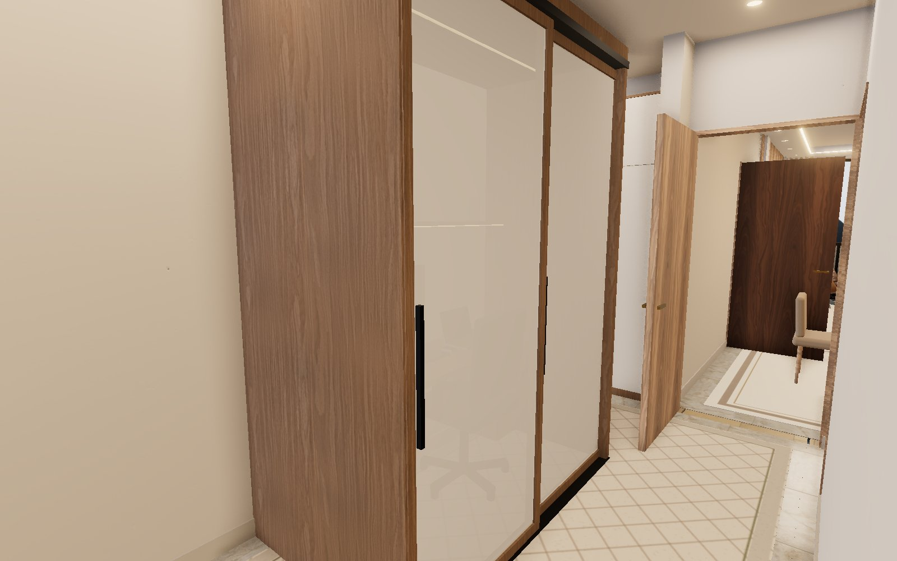
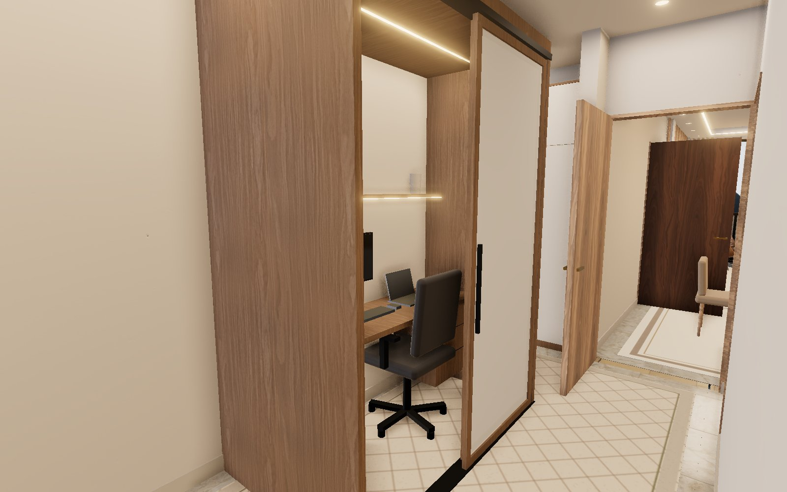
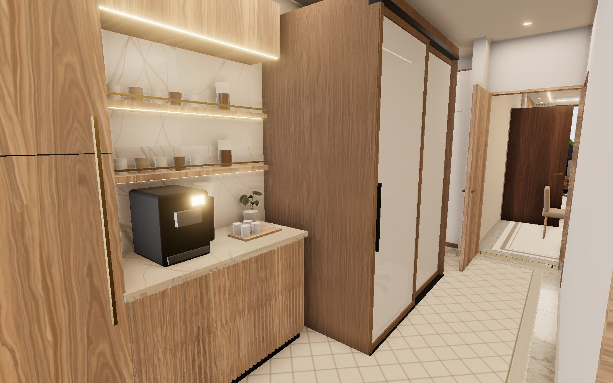

Corridor ideas — real renders of your corridor
Tell me the number you like. ← back to the 3D apartment
Round 3 — curved office pod (new design)

D · Curved office pod + coffee corner
Rounded pod in smooth cream lacquer with light-oak top and base bands and a glowing LED line under the top, next to the walnut coffee corner.

D · Curved pod — door closed
The door is a curved reeded-glass panel with thin brass ribs and a long brass handle: private but lets light in.

D · Curved pod — door open
The curved door glides round the curve and disappears behind the cream shell. Inside: oak floor, fluted walnut wall, desk with drawers, monitor, laptop, lit bookshelf.
Round 2 — coffee corner & office pod with sliding doors

A · Coffee corner
Tall walnut pantry with brass bar handle, fluted walnut base with cream marble top, Calacatta splash, two lit floating walnut shelves on brass rails with cups and coffee jars, espresso machine, grinder, cup tray.

B · Office pod — doors closed
Desk enclosed in an oak "cabin" (1.9 m wide, 1.1 m deep). Front closes with two frosted-glass sliding doors in oak frames: private, but light still comes in.

B · Office pod — doors open
Slide the outer door across: desk, monitor, laptop, office chair, shelf with books and LED lighting in the canopy. ~1.1 m walkway left in the corridor.

C · Pod + coffee corner together
Both fit on the same wall: office pod on the left, coffee corner on the right.
Round 1 ideas

1 · Home-office desk
2.2 m oak desk with PC + laptop, wall cabinets with LED above, office chair. 1.6 m walkway left free. Frees the bedroom.

2 · Library wall + reading corner
Four oak bookcases to 2.4 m along the wall, armchair, floor lamp and side table at the end.

3 · Coffee / drinks station
Worktop with coffee machine and kettle, tall fridge column, wall cabinets with a glass door above. Takes load off the kitchen.

4 · Hidden storage wall
Floor-to-ceiling handleless cream cabinets, 3.8 m long — looks like a panelled wall. For vacuum, suitcases, bedding.

5 · Gallery walk
Walnut fluted sideboard, round brass mirror, framed art either side, vase, flowers and a plant. Decorative only.

6 · Recommended mix
Desk with cabinets above in the middle, tall storage cupboards at both ends. Work + storage in one wall.